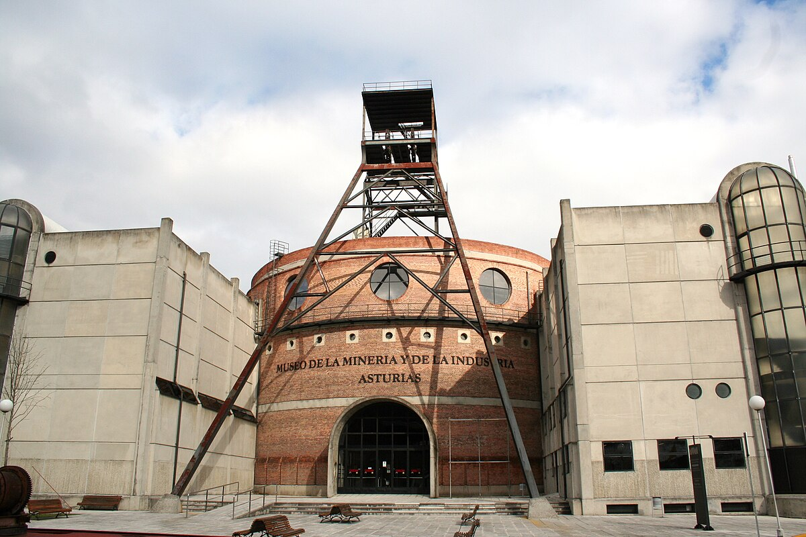

1. Museo del Jurásico de Asturias (MUJA)
Ubicado en Colunga, el MUJA es un museo dedicado a la era jurásica. Los niños pueden aprender sobre los dinosaurios a través de exposiciones interactivas, réplicas de fósiles y actividades educativas.
Crear cuenta para recibir información de museos
Asturias es una región rica en cultura e historia, y ofrece una variedad de museos que son perfectos para visitar con niños. Aquí te presentamos cuatro museos que no te puedes perder:
Ubicado en Colunga, el MUJA es un museo dedicado a la era jurásica. Los niños pueden aprender sobre los dinosaurios a través de exposiciones interactivas, réplicas de fósiles y actividades educativas.

Situado en El Entrego, el MUMI ofrece una visión fascinante de la historia minera de Asturias. Los niños pueden explorar las minas simuladas y participar en talleres que les enseñan sobre la vida de los mineros.

Este museo, ubicado en Gijón, es ideal para los amantes de los trenes. Los niños pueden ver locomotoras antiguas, vagones y aprender sobre la historia del ferrocarril en Asturias.

En el pequeño pueblo de Grandas de Salime, este museo ofrece una mirada a la vida rural asturiana. Los niños pueden explorar las casas tradicionales, herramientas agrícolas y participar en actividades que recrean la vida en el campo.
Estos museos no solo son educativos, sino que también ofrecen experiencias divertidas y memorables para toda la familia. ¡No olvides llevar tu cámara para capturar estos momentos especiales!